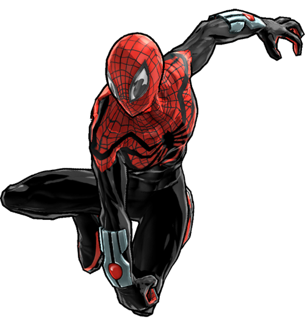

O Homem Aranha... Melhorado

O Homem-Aranha Superior é uma versão do Homem-Aranha criada quando o Doutor Octopus conseguiu assumir o corpo de Peter Parker. Convencido de que poderia ser um herói melhor do que Peter, Otto Octavius decidiu assumir completamente o papel de Homem-Aranha — mas mantendo sua própria personalidade, métodos e inteligência. Resultado: um Homem-Aranha muito mais agressivo, tecnológico e calculista.